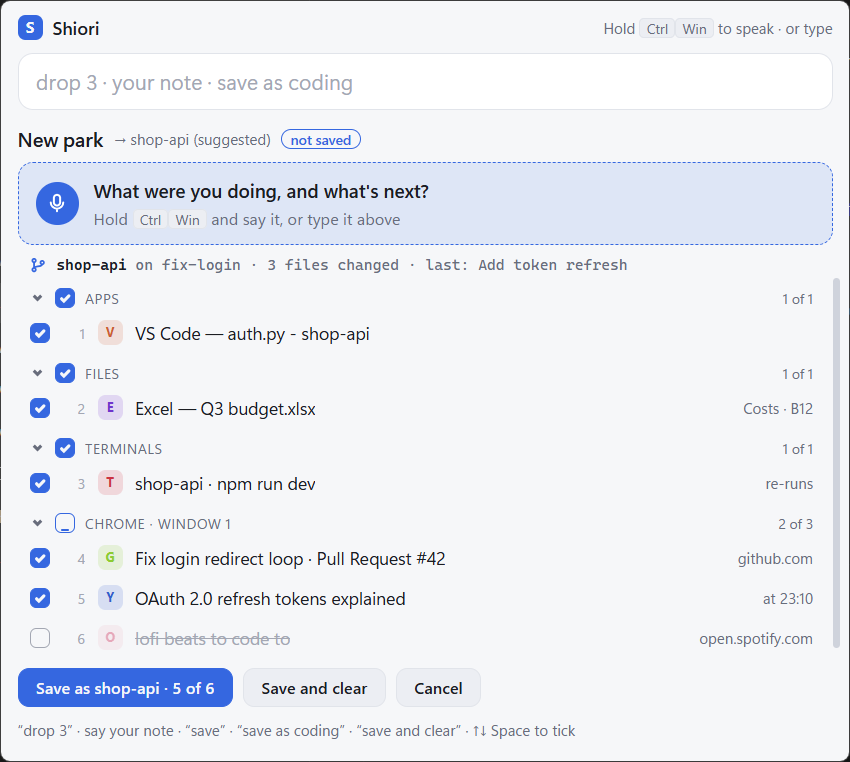
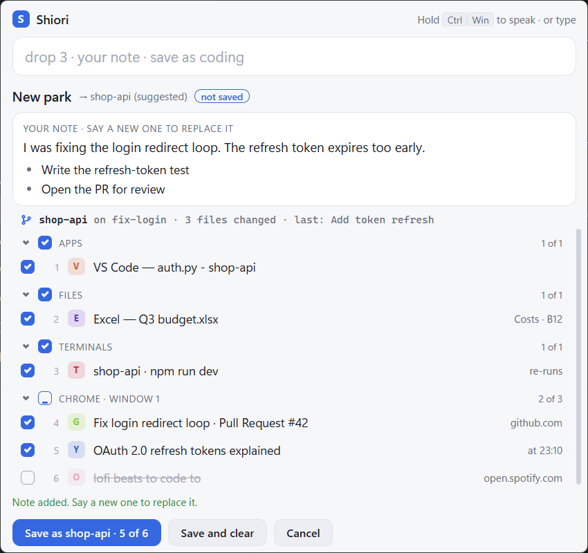
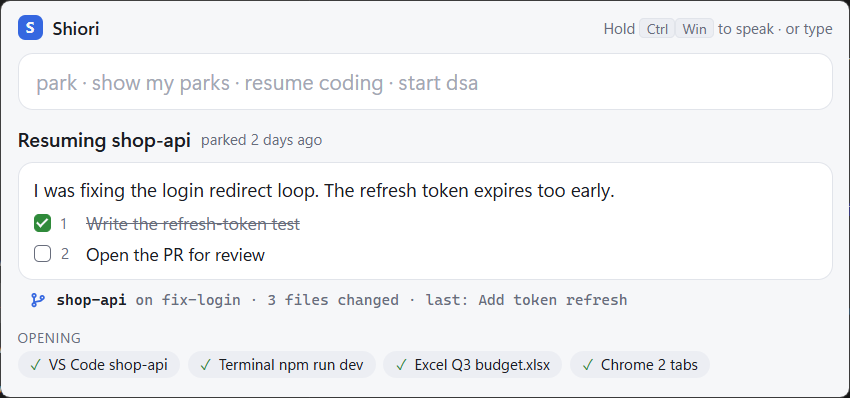
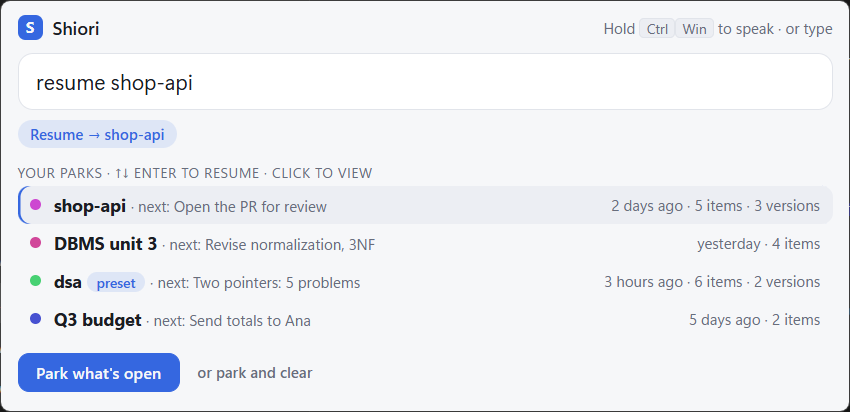

Switching tasks? Say “park”. Shiori saves every window, tab, terminal and file that's open, plus a quick spoken note on what you were doing and what's next. Days later, say “resume” and it all comes back, with your note.
Windows 10 / 11 · free · about 25 MB · no admin, no account, no API key

Press Ctrl Alt S anywhere, hold your Wispr Flow key and talk. Typing works exactly the same.
Everything open appears, already ticked. Chat and music start unticked. Drop anything with a click or a word.
“park”Talk through where you are. Shiori keeps your words, and each “next…” becomes a step you can tick off later.
“I was fixing the login loop, next write the test”Folders, tabs, terminals and files reopen, and your note is the first thing you read.
“resume shop-api”

Not just windows. The things that make “where was I?” take ten minutes.
As a named tab group in Chrome or Edge. YouTube lectures at the second you stopped.
In their folders. Dev servers like npm run dev start again; nothing else re-runs.
VS Code workspaces, Explorer folders and apps like Claude or Windows Terminal.
Excel at the same sheet and cell, PowerPoint at the same slide, Word documents.
Back in the app they were open in, from your recent files.
Branch, uncommitted changes and last commit, and a warning if you've switched branch since.
Every button has a sentence, and every sentence works typed too.
| park | Gather what's open |
| drop 3 · drop youtube | Leave something out |
| save as dsa · save | Save it, with a suggested name if you don't give one |
| save and clear | Save, then close what you saved (Undo for 60 s) |
| resume · resume dsa | Bring back the last one, or any by name |
| tick 1 | Tick off a next step |
| pin this · start dsa | Keep a set-up you start every day |
| undo | Take back the last resume, clear or delete |

Shiori is Japanese for a bookmark: the ribbon you leave in a book so you can open it again at the exact page. Closing your laptop shouldn't mean losing your place. Shiori is that ribbon, for everything on your screen and everything in your head.
No admin rights and nothing to sign up for.
Parks are plain files in %LOCALAPPDATA%\Shiori. No account, no cloud, no API key. The browser
extension only talks to Shiori on your own machine.